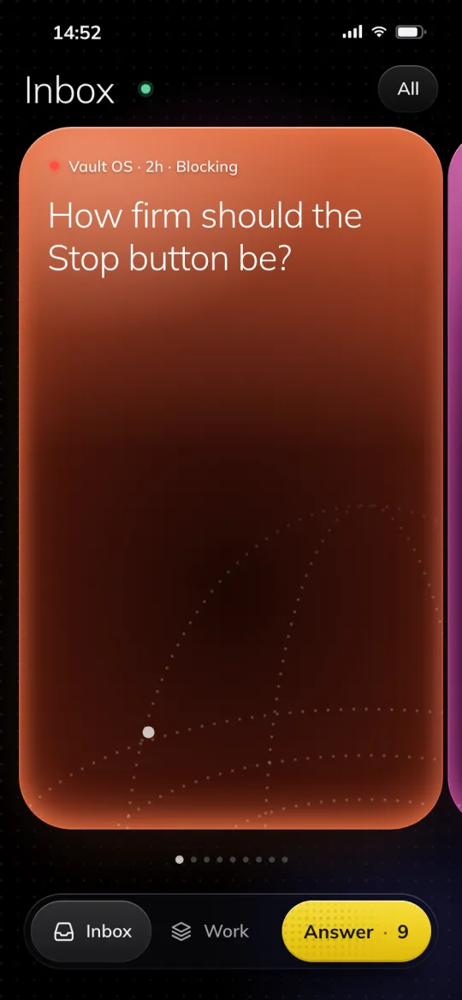
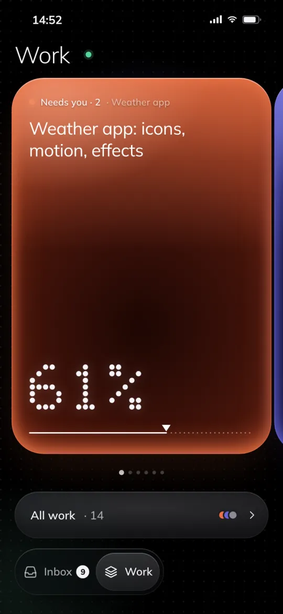
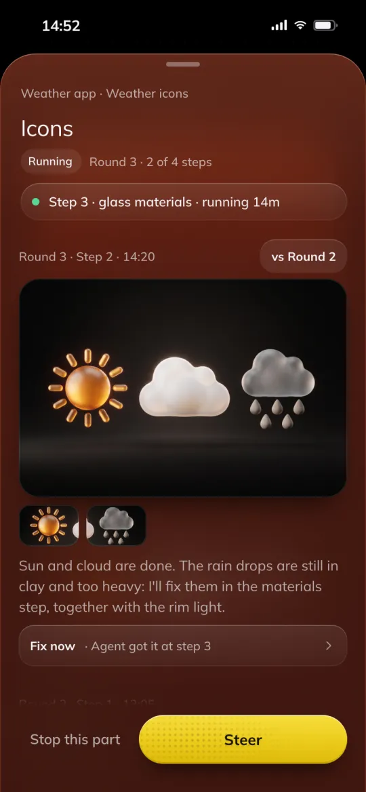
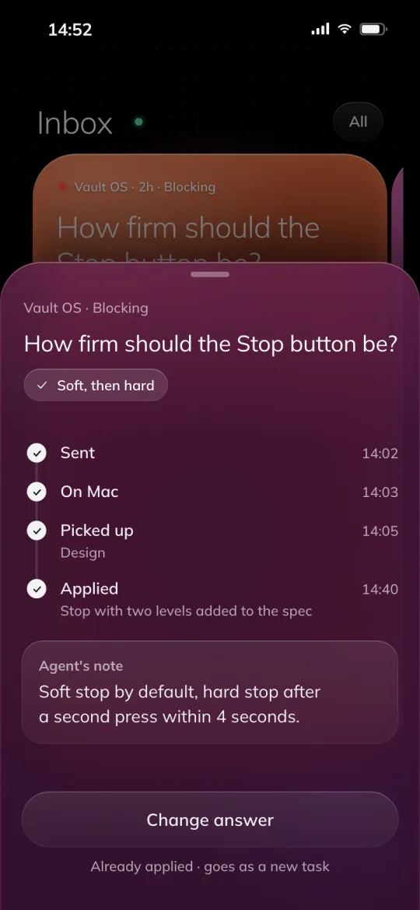

Step 1 · Main session
You ask in one line.
The main session turns it into a brief: the goal, when it counts as done, the result file, up to three documents to read, and what is out of scope.
Claude Code · Codex · Obsidian
Every task goes to the right model and agent, starts with a small slice of your vault, and is reviewed before you see it. Tuned for product UI/UX design and frontend.
Agent types per model
Build a pricing block
Haiku
agent types
Sonnet
agent types
Opus
agent types
You
questions
How it works
Follow one pricing block, for desktop and phone, through every agent that touches it.
The main session turns it into a brief: the goal, when it counts as done, the result file, up to three documents to read, and what is out of scope.
Every debatable spot gets a number: size, token, radius, state. A skill router loads one to three skills that fit the job, no more.
A fresh agent gets the spec and up to three documents, nothing else. No leftover chat from other jobs.
Fast and cheap: missing parts, empty areas, sizes that miss. When it is unsure, it hands the call up to Sonnet.
Looks are judged part by part. Two fix rounds at most: if a problem survives both, the next round must use a different method.
The assembled block gets one Opus review at 1440, 768, 390 and 320, plus a final check before it reaches you.
A task's questions wait in one decision card, in order, each with options and a recommended answer. Your answers are applied and saved to your vault for next time.
Routing
Small models do mechanical work. Mid models build. The strongest model designs, plans and reviews. Pick a task to see where it goes.
Sonnet · builder · effort medium
All agent types
Haiku
Sonnet
Opus
Context
In one long session, the rules file, the whole chat and every document you pulled in ride along with each step. Vault OS starts each agent fresh with a small slice of your vault, picked for its role and project.
Most of it is noise for the next task: old plans, research, notes from other projects.
In the prompt
One session
Same project, different slices. The budgets are hard limits: the command line cannot raise them.
Your vault
Designer agent
Project · PricingBuilder agent
Project · PricingSkill descriptions are capped at 300 characters and the whole listing at 5% of context. A router picks one to three skills per job.
Briefs name up to three documents. Research is distilled into short guides that agents read by section.
Orchestration rules load only in the main session. Before Claude Code compacts a long chat to free room, a snapshot of 1,000 to 2,000 tokens saves your last words, the running agents and the state files.
Your vault keeps separate zones, such as work, personal and client. A note from one zone never reaches a task in another.
Quality
Cheap checks run on every part. The expensive model looks once, at the whole. And no fix loop runs forever.
Fix list
Fix list
Fix list
Still failing? New method: redraw whole, other tool or route
Guards
Hooks sit between the agents and your machine. They stop the few actions that are hard to undo.
pkill -f noderm -rf build/*weekly usage 98%read screenshot.png · 3200 pxcontext compactionDesign layer
The same studio rules, tuned for screens: measurable specs, real widths, reviewers who try to break it.
Default, hover, pressed, active, disabled, empty, loading and error, at 1440, 768, 390 and 320. Every debatable spot has a number.
74 skills, grouped by job. For each job a router names the one to three that load and the ones to skip, so style rules never collide.
Before anything is reported, two read-only gate scripts check layer hygiene and that nothing outside the task changed.
Widths are compared with desktop element by element, at 1x and 2x. Motion gets its own review. Nothing is done until a deployed preview passes at 390 and 320.
Memory
Folders say where a note lives. Levels say how far an agent may trust it.
Policy
Rules you approved, bound to your name, the date and a hash of the page. An edit voids the approval.
Buttons: 52 pxCanonical
The agreed version: project state and workflows that agents build on.
Verified facts
Checked, with provenance: where each fact came from.
Evidence
Raw sources, logs and transcripts. Never edited. Read only when needed.
Evolution
One command runs a hygiene pass over memory and the wiki. A read-only verifier checks the result before anything counts.
Curator
Audits memory and finds pages at the wrong trust level. Makes only safe fixes and proposes the rest.
Hygiene
One zone at a time, under a lock: dead links, unlinked pages, stale claims. Long logs get a summary; nothing is deleted.
Retrieval refresh
Rebuilds the indexes, validates them, then checks them with a live query.
Verifier
Read-only. Checks that zones stay apart, that no data leaves, that it can be undone and that evidence is kept.
Pass · facts (L1) and canonical pages (L2) update
Policy changes wait for you
Your seat · iPhone app in development
Questions and finished work wait as decision cards in your vault. The Vault OS iPhone app, in development, brings them to your phone. This is where it stands today.
The recommended answer comes first. Accept it, pick another or add a voice note.

Sample content
Every running job shows its step, its round and what it waits on.

Sample content
Mark the exact spot on a result. The note reaches the agent at its next step.

Sample content
Sent, picked up on the Mac, applied: each step comes back with the agent's note.

Sample content
Why it matters
Routing
Plain
You decide which model runs each step, or one model runs all of them.
Vault OS
The agent type sets the model and effort: Haiku for mechanical work, Sonnet to build, Opus to design and review.
Quality
Plain
You review whatever comes back.
Vault OS
Every part is checked and every whole is reviewed before you see it.
Continuity
Plain
Memory is one rules file and a notes file, all trusted the same.
Vault OS
Specs, decisions and lessons live in your vault, ranked by four trust levels.
Attention
Plain
You watch the session and answer in the chat.
Vault OS
Questions wait as decision cards with a recommended answer. Drafts never reach you.
Install
Open Claude Code and paste this. It reads the install guide, asks a short setup quiz and creates a new private vault.
Paste the line
In Claude Code, in any folder.
Answer the quiz
Trust levels, zones (work, personal, client) and the optional Codex setup.
Open the vault
Open the new vault in Obsidian and start working.